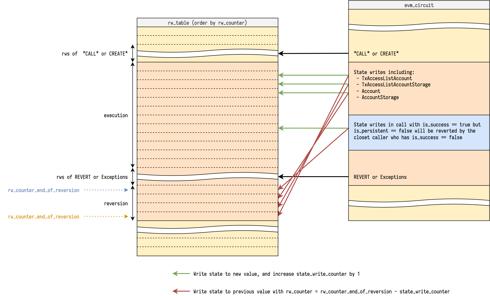

Introduction
The zkEVM aims to specify and implement a solution to validate Ethereum blocks via zero knowledge proofs. The project aims to achieve 100% compatibility with the Ethereum's EVM. It's an open-source project that is contributed and owned by the community. Check out the contributors at here and here.
This book contains general documentation of the project.
The project currently has two goals:
zkRollup
Build a solution that allows deploying a layer 2 network that is compatible with the Ethereum ecosystem (by following the Ethereum specification) and submits zero knowledge proofs of correctly constructed new blocks to a layer 1 smart contract which validates such proofs (and acts as a consensus layer).
The usage of zero knowledge proofs to validate blocks allows clients to validate transactions quicker than it takes to process them, offering benefits in scalability.
Validity proofs
Build a solution that allows generating zero knowledge proofs of blocks from an existing Ethereum network (such as mainnet), and publish them in a smart contract in the same network.
The usage of zero knowledge proofs to validate blocks allows light clients to quickly synchronize many blocks with low resource consumption, while guaranteeing the correctness of the blocks without needing trust on external parties.
Status
The zkEVM project is not yet complete, so you may find parts that are not yet implemented, incomplete, or don't have a specification. At the same time, other parts which are already implemented may be changed in the future.
Links
Architecture
Concepts
Architecture diagram
Each circuit is layouted to be capable to build their own custom constraints. When circuits encounter some expensive operations, they can outsource the effort to other circuits through the usage of lookup arguments. The relationship between circuits looks like:
List of circuits and tables they generate/verify:
| Circuit | Table |
|---|---|
| EVM Circuit | |
| Bytecode Circuit | Bytecode Table |
| State Circuit | Rw Table |
| Block Circuit | Block Table |
| Tx Circuit | Tx Table |
| MPT Circuit | MPT Table |
| Keccak Circuit | Keccak Table |
| ECDSA Circuit | ECDSA Table |
In the end, the circuits would be assembled depending on their dimension and the desired capacity. For example, we can just combine 2 different circuits by using different columns, or stack them using same columns with extra selectors.
In order to reduce the time required to build a proof of a full block and to simplify the verification step, an aggregation circuit is being build so that condenses the verification of each sub-circuit proofs shown in the diagram. See Design Notes, Recursion for details on the recursion strategy used in the aggregation circuit.
Circuit as a lookup table
In halo2, the lookup is flexible to be configured. Anything able to be turned into Expression could be used as item: Tuple[int, ...] or table: Set[Tuple[int, ...]] in lookup. Enabling assert item in table. The Expression includes Constant, Fixed, Advice or Instance column at arbitrary rotation.
The motivation to have multiple circuits as lookup tables is that EVM contains many circuit unfriendly operations like random read-write data access, "wrong" field operation (ECDSA on secp256k1), traditional hash functions like keccak256, etc... And many of them accept variable lenght input.
These expensive operations make it hard to design an EVM circuit to verify computation traces because each step could possibly contain some of the operations mentioned above. So we tried to separate these expensive operations into single-purpose circuits which have a more friendly layout, and use them via lookups to communicate it's input and output, Outsourcing the effort.
The reason input-output lookups could be used to outsource the effort is that we know the that the lookup-ed table is configured with constraints to verify the input and output are in some relationship. For example, we let Bytecode circuit to hold a set of tuple (code_hash, index, opcode), and each code_hash is verified to be the keccak256 digest of opcodes it contains, then in EVM circuit we can load opcode with (code_hash, program_counter) by looking up the Bytecode table.
However, there are some properties we can't ensure only with lookups (which ultimately only prove that the contents of all the lookups are a subset of a table). We want to constraint that the amount of all (looked-up) items should be equal to the size of table, which is required by the EVM circuit and State circuit to prevent extra malicious writes in the table. In such case (the set of looked up items define the table exactly), we need some extra constraint to ensure the relationship is correct. A naive approach is to count all item in State circuit (which in the end is the size of the table) and constraint it to be equal to the value counted in the EVM circuit.
EVM word encoding
See Design Notes, Random Linear Combination
Custom types
Constants
| Name | Value | Description |
|---|---|---|
MAX_MEMORY_ADDRESS | 2**40 - 1 | max memory address allowed 1 |
MAX_GAS | 2**64 - 1 | max gas allowed |
MAX_ETHER | 2**256 - 1 | max value of ether allowed 2 |
The explicit max memory address in EVM is actually 32 * (2**32 - 1), which is the one that doesn't make memory expansion gas cost overflow u64. In our case, memory address is allowed to be 5 bytes, but will constrain the memory expansion gas cost to fit u64 in success case.
I didn't find a explicit upper bound on value of ether (for balance or gas_price) in yellow paper, but handling unbounded big integer seems unrealistic in circuit, so with u256 as a hard bound seems reasonable.
EVM Circuit
Introduction
EVM circuit iterates over transactions included in the proof to verify that each execution step of a transaction is valid. Basically the scale of a step is the same as in the EVM, so usually we handle one opcode per step, except those opcodes like SHA3 or CALLDATACOPY that operate on variable size of memory, which would require multiple "virtual" steps.
The scale of a step somehow could be different depends on the approach, an extreme case is to implement a VM with reduced instruction set (like TinyRAM) to emulate EVM, which would have a much smaller step, but not sure how it compares to current approach.
han
To verify if a step is valid, we first enumerate all possible execution results of a step in the EVM including success and error cases, and then build a custom constraint to verify that the step transition is correct for each execution result.
For each step, we constrain it to enable one of the execution results, and specially, to constrain the first step to enable BEGIN_TX, which then repeats the step to verify the full execution trace. Also each step is given access to next step to propagate the tracking information, by putting constraints like assert next.program_counter == curr.program_counter + 1.
Concepts
Execution result
It's intuitive to have each opcode as a branch in step. However, EVM has so rich opcodes that some of them are very similar like {ADD,SUB}, {PUSH*}, {DUP*} and {SWAP*} that seem to be handled by almost identical constraint with small tweak (to swap a value or automatically done due to linearity), it seems we could reduce our effort to only implement it once to handle multiple opcodes in single branch.
In addition, an EVM state transition could also contain serveral kinds of error cases, we also need to take them into consideration to be equivalent to EVM. It would be annoying for each opcode branch to handle their own error cases since it needs to halt the step and return the execution context to caller.
Fortunately, most error cases are easy to verify with some pre-built lookup table even they could happen to many opcodes, only some tough errors like out of gas due to dynamic gas usage need to be verified one by one. So we further unroll all kinds of error cases as kinds of execution result.
So we can enumerate all possible execution results and turn EVM circuit into a finite state machine like:
flowchart LR
BEGIN[.] --> BeginTx;
BeginTx --> |no code| EndTx;
BeginTx --> |has code| EVMExecStates;
EVMExecStates --> EVMExecStates;
EVMExecStates --> EndTx;
EndTx --> BeginTx;
EndTx --> EndBlock;
EndBlock --> EndBlock;
EndBlock --> END[.];
flowchart LR
subgraph A [EVMExecStates]
BEGIN2[.] --> SuccessStep;
BEGIN2[.] --> ReturnStep;
SuccessStep --> SuccessStep;
SuccessStep --> ReturnStep;
ReturnStep --> |not is_root| SuccessStep;
ReturnStep --> |not is_root| ReturnStep;
ReturnStep --> |is_root| END2[.];
end
- BeginTx:
- Beginning of a transaction.
- EVMExecStates = [ SuccessStep | ReturnStep ]
- SuccessStep = [ ExecStep | ExecMetaStep | ExecSubStep ]
- Set of states that suceed and continue the execution within the call.
- ReturnStep = [ ExplicitReturn | Error ]
- Set of states that halt the execution of a call and return to the caller or go to the next tx.
- ExecStep:
- 1-1 mapping with a GethExecStep for opcodes that map to a single gadget
with a single step. Example:
ADD,MUL,DIV,CREATE2.
- 1-1 mapping with a GethExecStep for opcodes that map to a single gadget
with a single step. Example:
- ExecMetaStep:
- N-1 mapping with a GethExecStep for opcodes that share the same gadget
(due to similarity) with a single step. For example
{ADD, SUB},{PUSH*},{DUP*}and{SWAP*}. A good example on how these are grouped is theStackOnlyOpcodestruct.
- N-1 mapping with a GethExecStep for opcodes that share the same gadget
(due to similarity) with a single step. For example
- ExecSubStep:
- 1-N mapping with a GethExecStep for opcodes that deal with dynamic size
arrays for which multiple steps are generated.
CALLDATACOPY-> CopyToMemoryRETURNDATACOPY-> TODOCODECOPY-> TODOEXTCODECOPY-> IN PROGRESSSHA3-> IN PROGRESSLOGN-> CopyToLog
- 1-N mapping with a GethExecStep for opcodes that deal with dynamic size
arrays for which multiple steps are generated.
- ExplicitReturn:
- 1-1 mapping with a GethExecStep for opcodes that return from a call without exception.
- Error = [ ErrorEnoughGas | ErrorOutOfGas ]
- Set of states that are associated with exceptions caused by opcodes.
- ErrorEnoughGas:
- Set of error states that are unrelated to out of gas. Example:
InvalidOpcode,StackOverflow,InvalidJump.
- Set of error states that are unrelated to out of gas. Example:
- ErrorOutOfGas:
- Set of error states for opcodes that run out of gas. For each opcode (sometimes group of opcodes) that has dynamic memory gas usage, there is a specific ErrorOutOfGas error state.
- EndTx
- End of a transaction.
- EndBlock
- End of a block (serves also as padding for the rest of the state step slots)
In the current implementation, we ask the opcode implementer to also implement error cases, which seems to be a redundant effort. But by doing this, they can focus more on opcode's success case. Also error cases are usually easier to verify, so I think it also reduces the overall implementation complexity.
han
Random access data
In EVM, the interpreter has the ability to do any random access to data like block context, account balance, stack and memory in current scope, etc... Some of these access are read-write and others are read-only.
In EVM circuit, we leverage the concept Circuit as a lookup table to duplicate these random data access to other circuits in a different layout and verify that they are consistent and valid. After these random data access are verified, we can use them just as if they were only tables. Here are the tables currently used in the EVM circuit.
For read-write access data, EVM circuit looks up State circuit with a sequentially rw_counter (read-write counter) to make sure the read-write access is chronological. It also uses a flag is_write to check data consistency between different write access.
For read-only access data, EVM circuit looks-up Bytecode circuit, Tx circuit and Call circuit directly.
Reversible write reversion
In EVM, reversible writes can be reverted if any call fails. There are many kinds of reversible writes, a complete list can be found here.
In EVM circuit, each call is attached with a flag (is_persistent) to know if it succeeds or not. So ideally, we only need to do reversion on these kinds of reversible writes which affect future execution before reversion:
TxAccessListAccountTxAccessListStorageSlotAccountNonceAccountBalanceAccountCodeHashAccountStorage
On some others we don't need to do reversion because they don't affect future execution before reversion, we only write them when is_persistent is 1:
TxRefundAccountDestructed
Another tag is
TxLog, which also doesn't affect future execution. It should be explained where to write such record to after we decide where to build receipt trie.han
To enable reversible write reversion, we need some meta information of a call:
is_persistent- To know if we need reversion or not.rw_counter_end_of_reversion- To know at which point in the future we should revert.reversible_write_counter- To know how many reversible writes we have done until now.
Then at each reversible write, we first check if is_persistent is 0, if so we do an extra reversible write at rw_counter_end_of_reversion - reversible_write_counter with the old value, which reverts the reversible write in a reverse order.
For more notes on reversible write reversion see:
Opcode fetching
In EVM circuit, there are 3 kinds of opcode source for execution or copy:
- Contract interaction:
Opcode is lookup from contract bytecode in Bytecode circuit by tuple
(code_hash, index, opcode) - Contract creation in root call:
Opcode is lookup from tx calldata in Tx circuit by tuple
(tx_id, TxTableTag.Calldata, index, opcode) - Contract creation in internal call:
Opcode is lookup from caller's memory in State circuit by tuple
(rw_counter, False, caller_id, index, opcode)
Before we fetch opcode from any source, it checks if the index is in the given range, if not, it follows the behavior of current EVM to implicitly returning 0.
Internal call
EVM supports internal call triggered by opcodes. In EVM circuit, the opcodes (like CALL or CREATE) that trigger internal call, will:
- Save their own
call_stateinto State circuit. - Setup next call's context.
- Initialize next step's
call_stateto start a new environment.
Then the opcodes (like RETURN or REVERT) and error cases that halt, will restore caller's call_state and set it back to next step.
For a simple CALL example with illustration (many details are hided for simplicity):

Constraints
main
==TODO== Explain each execution result
Implementation
Opcode Fetching
Introduction
For opcode fetching, we might have 3 sources in different situation:
- When contract interaction, we lookup
bytecode_tableto read bytecode. - When contract creation in root call, we lookup
tx_tableto read transaction's calldata. - When contract creation in internal call, we lookup
rw_tableto read caller's memory.
Also we need to handle 2 kinds of annoying EVM features:
- Implicit
STOPreturning if fetching out of range. - For
JUMP*, we need to verify:- destination is a
JUMPDEST - destination is not a data section of
PUSH*
- destination is a
Since for each step program_counter only changes in 3 situation:
if opcode in [JUMP, JUMPI]:
program_counter = dest
elif opcode in range(PUSH1, PUSH1 + 32):
program_counter += opcode - PUSH1 + 1
else:
program_counter += 1
For all opcodes except for JUMP* and PUSH*, we only need to worry about first issue, and we can solve it by checking if bytecode_length <= program_counter then detect such case.
For PUSH* we can do the lookup only when program_counter + x < bytecode_length and simulate the "implicit 0". (Other opcodes like CALLDATALOAD, CALLDATACOPY, CODECOPY, EXTCODECOPY also encounter such "implicit 0" problem, and we need to handle them carefully).
However, for JUMP* we need one more trick to handle, especially for the issue 2.2., which seems not possible to check if we don't scan through all opcodes from the beginning to the end.
Focus on solving the issue 2.2., my thought went through 2 steps:
Step #1 - is_code Annotation
If the opcode is layouted to be adjacent like the bytecode_table or tx_table, we can annotate each row with push_data_rindex and is_code:
push_data_rindexmeans push data's reverse index, which starts from1instead of0.han
$$ \begin{array}{|c|c|} \hline \texttt{{bytecode_hash,tx_id}} & \texttt{index} & \texttt{opcode} & \texttt{push_data_rindex} & \texttt{is_code} & \text{note} \\\hline \color{#aaa}{\texttt{-}} & \color{#aaa}{\texttt{-}} & \color{#aaa}{\texttt{-}} & \color{#aaa}{\texttt{-}} & \color{#aaa}{\texttt{-}} \\\hline \texttt{0xff} & \texttt{0} & \texttt{PUSH1} & \texttt{0} & \texttt{1} \\\hline \texttt{0xff} & \texttt{1} & \texttt{0xef} & \texttt{1} & \texttt{0} \\\hline \texttt{0xff} & \texttt{2} & \texttt{0xee} & \texttt{0} & \texttt{1} \\\hline \texttt{0xff} & \texttt{3} & \texttt{PUSH2} & \texttt{0} & \texttt{1} \\\hline \texttt{0xff} & \texttt{4} & \texttt{PUSH1} & \texttt{2} & \texttt{0} & \text{is not code} \\\hline \texttt{0xff} & \texttt{5} & \texttt{PUSH1} & \texttt{1} & \texttt{0} & \text{is not code} \\\hline \texttt{0xff} & \texttt{6} & \texttt{JUMPDEST} & \texttt{0} & \texttt{1} & \text{is code!} \\\hline \color{#aaa}{\texttt{-}} & \color{#aaa}{\texttt{-}} & \color{#aaa}{\texttt{-}} & \color{#aaa}{\texttt{-}} & \color{#aaa}{\texttt{-}} \\\hline \end{array} $$
The constraint would be like:
class Row:
code_hash_or_tx_id: int
index: int
opcode: int
push_data_rindex: int
is_code: int
def constraint(prev: Row, curr: Row, is_first_row: bool):
same_source = curr.code_hash_or_tx_id == prev.code_hash_or_tx_id
assert curr.is_code == is_zero(curr.push_data_rindex)
if is_first_row or same_source:
assert curr.push_data_rindex == 0
else:
if prev.is_code:
if (prev.opcode - PUSH1) in range(32):
assert curr.push_data_rindex == prev.opcode - PUSH1 + 1
else:
assert curr.push_data_rindex == 0
else:
assert curr.push_data_rindex == prev.push_data_rindex - 1
And when handling JUMP* we can check is_code for verification.
However, the memory in the State circuit it's layouted to be memory_address and then rw_counter, which we can't select at some specific point to do such analysis. So this approach seems not work on all situations.
Step #2 - Explicitly copy memory to bytecode_table
It seems inevitable to copy the memory to bytecode_table since the CREATE* needs it to know the bytecode_hash. So maybe we can abuse such constraint to also copy the creation bytecode to the bytecode_table. Althought the hash of it means nothing, we still can use it as a unique identifier to index out the opcode.
Then we can define an internal multi-step execution result COPY_MEMORY_TO_BYTECODE which can only transit from CREATE* or RETURN, and copy the memory from offset with length to the bytecode_table.
Although it costs many steps to copy the creation code, it makes the opcode fetching source become simpler with only bytecode_table and tx_table. The issue of memory's unfriendly layout is also gone, issue 2.2. is then resolved.
Memory copy on creation code seems terrible since a prover can reuse the same large chunk of memory to call multiple times of
CREATE*, and we always need to copy them, which might cost many steps. We need some benchmark to see if a block contains full of suchCREATE*to know how much gas we can verify in a block, then know if it's aligned to current gas cost model or not, and decide whether to further optimize it.han
Random Thought
Memory copy optimization
When it comes to "memory copy", it means in EVM circuit we lookup both rw_table and bytecode_table to make sure the chunk of memory indeed exists in the latter table. However, EVM circuit doesn't have a friendly layout to do such operation (it costs many expressions to achieve so).
If we want to further optimize "memory copy" in respect to the concern highlighted in Step #2, since we know the memory to be copied is in chunk, and in bytecode_table it also exists in chunk, then we seem to let Bytecode circuit to do such operation with correct rw_counter, and in EVM circuit we only need to "trigger" such operation. We can add extra selector columns to enable it like:
$$ \begin{array}{|c|c|} \hline \texttt{call_id} & \texttt{memory_offset} & \texttt{rw_counter} & \texttt{bytecode_hash} & \texttt{bytecode_length} & \texttt{index} & \texttt{opcode} \\\hline \color{#aaa}{\texttt{-}} & \color{#aaa}{\texttt{-}} & \color{#aaa}{\texttt{-}} & \color{#aaa}{\texttt{-}} & \color{#aaa}{\texttt{-}} & \color{#aaa}{\texttt{-}} & \color{#aaa}{\texttt{-}} \\\hline \texttt{3} & \texttt{64} & \texttt{38} & \texttt{0xff} & \texttt{4} & \texttt{0} & \texttt{PUSH1} \\\hline \texttt{3} & \texttt{64} & \texttt{39} & \texttt{0xff} & \texttt{4} & \texttt{1} & \texttt{0x00} \\\hline \texttt{3} & \texttt{64} & \texttt{40} & \texttt{0xff} & \texttt{4} & \texttt{2} & \texttt{DUP1} \\\hline \texttt{3} & \texttt{64} & \texttt{41} & \texttt{0xff} & \texttt{4} & \texttt{3} & \texttt{RETURN} \\\hline \color{#aaa}{\texttt{-}} & \color{#aaa}{\texttt{-}} & \color{#aaa}{\texttt{-}} & \color{#aaa}{\texttt{-}} & \color{#aaa}{\texttt{-}} & \color{#aaa}{\texttt{-}} & \color{#aaa}{\texttt{-}} \\\hline \end{array} $$
bytecode_lengthis required no matter we adopt this or not. It's ignored previously for simplicityhan
Then the constraint in Bytecode circuit might look like:
class Row:
call_id: int
memory_offset: int
rw_counter: int
bytecode_hash: int
bytecode_length: int
index: int
opcode: int
def copy_memory_constraint(prev: Row, curr: Row, is_first_row: bool):
same_source = curr.bytecode_hash == prev.bytecode_hash
if same_source:
assert curr.call_id == prev.call_id
assert curr.memory_offset == prev.memory_offset
assert curr.rw_counter == prev.rw_counter + 1
if curr.call_id is not 0:
assert (
curr.rw_counter, # rw_counter
False, # is_write
Memory, # tag
curr.call_id, # call_id
curr.memory_offset + curr.index, # memory_address
curr.opcode, # byte
0,
0,
) in rw_table
And in EVM circuit we only needs to make sure the first row of such series exist, then transit the rw_counter by bytecode_length to next step.
Memory copy generalizaiton
For opcodes like PUSH*, CALLDATALOAD, CALLDATACOPY, CODECOPY, EXTCODECOPY we need to copy bytecode to memory and it seems that we can reuse the COPY_MEMORY_TO_BYTECODE, with a small tweak to change the is_write to memory to True.
Tx calldata copy
Since we already copy memory, why not also copy the calldata part of tx_table to bytecode_table? We can use the same trick as in Memory copy optimization to make sure tx calldata is copied to bytecode_table. Then we only have a single source to do opcode fetching, which simplifies a lot of things.
The only concern is, will this cost much on
bytecode_table's capacity? We still need actual benchmark to see if it's adoptable.han
I think so it would be better to maintain only one byte_code_table for all related using if it is feasible, calldata copy of contract creation seems double the table size
dream
Multi-Step Implementation
Introduction
In EVM, there are serveral opcodes moving dynamic-length bytes around between different sources, here is a complete list:
| Type | Opcode | Source | Destination |
|---|---|---|---|
| 1 | CODECOPYEXTCODECOPY |
bytecode[code_hash] |
calls[call_id].memory |
CALLDATACOPY and is_root |
txs[tx_id].calldata |
calls[call_id].memory |
|
CALLDATACOPY and not_root |
calls[caller_call_id].memory |
calls[call_id].memory |
|
| 2 | RETURNDATACOPY |
calls[callee_call_id].memory |
calls[call_id].memory |
| 3 | RETURN and is_createCREATECREATE2 |
calls[call_id].memory |
bytecode[code_hash] |
SHA3 |
calls[call_id].memory |
TBD | |
| 4 | RETURN and not_create |
calls[call_id].memory |
calls[caller_call_id].memory |
REVERT and not_create |
calls[call_id].memory |
calls[caller_call_id].memory |
With illustration:

There could be classified to be 4 types:
* -> memory (padding)- Including:
CALLDATACOPYCODECOPYEXTCODECOPY
- Copy from calldata or code to current memory.
- Memory gets filled with 0's when copied out of source's range, in other words, source is padded with 0's to the range.
- Including:
* -> memory (no padding)- Including
RETURNDATACOPY. - Similar to Type 1, but the range is explicitly checked to be in source's range, otherwise the EVM halts with exception. So no padding issue.
- Including
memory -> * (no range capped)- Including:
RETURNwhenis_createCREATECREATE2SHA3
- Copy from current memory to destination.
- No padding issue since memory is always expanded implicitly due to lazy initialization.
- Including:
memory -> * (range capped)- Including:
RETURNwhennot_createREVERTwhennot_create
- Similar to Type 3, but the range is capped by caller's assignment.
- Including:
Approaches
Approach #1 - Given access to previous step
Take CALLDATALOAD as an example, in the approach by @icemelon, it requires access to previous step to infer what's the state of current step, to know if the step is the first step, we check
curr.opcode == CALLDATALOADprev.execution_state != CALLDATALOAD or prev.finished is True
And it transit the StepState at the last step, which is inferred from if the bytes left to copy is less then a step's amount.
Approach #2 - Introduce internal ExecutionState
This approach introduce internal ExecutionState with extra constraint of ExecutionState transition, and the inputs will be passed by constraint from previous step. The new ExecutionState are:
-
CopyMemoryToMemory- Can only transited from:
RETURNREVERTCALLDATACOPYRETURNDATACOPY
- Inputs:
src_call_id- id of source call (to be read)dst_call_id- id of destination call (to be written)src_end- end of source, it returns0when indexing out of this.src_offset- memory offset of source calldst_offset- memory offset of destination callbytes_left- how many bytes left to copy
- Note:
- The
src_endis only used byCALLDATACOPYsince only it needs padding.
- The
- Can only transited from:
-
CopyTxCalldataToMemory- Can only transited from
CALLDATACOPY - Inputs:
tx_id- id of current txsrc_end- end of source, it returns0when indexing out of thissrc_offset- calldata offset of txdst_offset- memory offset of current callbytes_left- how many bytes left to copy
- Can only transited from
-
CopyBytecodeToMemory- Can only transited from:
CODECOPYEXTCODECOPY
- Inputs:
code_hash- hash of bytecodesrc_end- end of source, it returns0when indexing out of thissrc_offset- calldata offset of txdst_offset- memory offset of current callbytes_left- how many bytes left to copy
- Can only transited from:
-
CopyMemoryToBytecode- Can only transited from:
CREATE- copy init codeCREATE2- copy init codeRETURN- copy deployment code
- Inputs:
code_hash- hash of bytecodesrc_offset- calldata offset of txdst_offset- memory offset of current callbytes_left- how many bytes left to copy
- Note
- This differs from
CopyBytecodeToMemoryin that it doesn't have padding.
- This differs from
- Can only transited from:
If we can have a better way to further generalize these inner
ExecutionState, we can have less redundant implementation.han
And they do the bytes copy with range check specified by trigger ExecutionState.
Also these internal ExecutionStates always propagate StepStates as the same value, since the transition is already done by the trigger of ExecutionState.
Take CALL then CALLDATALOAD as an example:
- Caller executes
CALLwith stack values (naming referenced frominstruction.go#L668):inOffset = 32inSize = 32
- Callee executes
CALLDATALOADwith stack values (naming referenced frominstruction.go#L301-L303):memOffset = 0dataOffset = 64length = 32
- The first step of
CopyMemoryToMemorywill receive inputs:src_call_id = caller_call_iddst_call_id = callee_call_idsrc_end = inOffset + inSize = 64src_offset = inOffset + dataOffset = 96dst_offset = memOffset = 0bytes_left = length = 32
Then, in every step we check if src_offset < src_end, if not, we need to disable the source lookup and fill zeros into destination. Then add the *_offset by the amount of bytes we process at a step, and subtract bytes_left also by it, then propagate them to next step.
Conclusion
Comparison between the 2 approaches:
- Approach #1
- Pros
- No additional
ExecutionState
- No additional
- Cons
- Each multi-step opcodes will have at least 3 extra nested branches:
is_first- If the step is the firstnot_first- If the step is n-th stepis_final- If the step is final
- Each multi-step opcodes will have at least 3 extra nested branches:
- Pros
- Approach #2
- Pros
- Each multi-step opcodes only need to prepare the inputs of those inner
ExecutionStateand do the correctStepStatetransition. - Only 2 nested branches:
not_final- If the step is n-th stepis_final- If the step is final
- Each multi-step opcodes only need to prepare the inputs of those inner
- Cons
- Additional
ExecutionState
- Additional
- Pros
In the context of current implementation, approach #2 seems easier to implement due to the separation of complexity, and also less prover effort.
In the context of re-designed EVM circuit (re-use instruction instead of building giant custom gates), it seems no difference on prover effort between the 2 approaches, but approach #2 seems better because it extracts the nested branch and should reduce the usage of rows.
Tx Circuit
Tx circuit iterates over transactions included in proof to verify each transaction has valid signature. It also verifies the built transaction merkle patricia trie has same root hash as public input.
Main part of Tx circuit will be instance columns whose evaluation values are built by verifier directly. See the issue for more details.
To verify if a transaction has valid signature, it hashes the RLP encoding of transaction and recover the address of signer with signature, then verifies the signer address is correct.
It serves as a lookup table for EVM circuit to do random access of any field of transaction.
To prevent any skip of transactions, we verify that the amount of transactions in the Tx circuit is equal to the amount that verified in EVM circuit.
State Circuit
Introduction
The State circuit iterates over random read-write access records of EVM circuit to verify that each piece of data is consistent between different writes. It also verifies the state merkle patricia trie root hash corresponds to a valid transition from old to new one incrementally, where both are from public input.
To verify if data is consistent, it first verifies that all access records are grouped by their unique identifier and sorted by order of access. Then verifies that the records between writes are consistent. It also verifies that data is in the correct format.
It serves as a lookup table for EVM circuit to do consistent random read-write access.
To prevent any malicious insertion of access record, we also verify the amount of random read-write access records in State circuit is equal to the amount in EVM circuit (the final value of rw_counter).
Concepts
Read-write unit grouping
The first thing to ensure data is consistent between different writes is to give each data an unique identifier, then group data chunks by the unique identifier. And finally, then sort them by order of access rw_counter.
Here are all kinds of data with their unique identifier:
| Tag | Unique Index | Values |
|---|---|---|
TxAccessListAccount | (tx_id, account_address) | (is_warm, is_warm_prev) |
TxAccessListAccountStorage | (tx_id, account_address, storage_slot) | (is_warm, is_warm_prev) |
TxRefund | (tx_id) | (value, value_prev) |
Account | (account_address, field_tag) | (value, value_prev) |
AccountStorage | (account_address, storage_slot) | (value, value_prev) |
AccountDestructed | (account_address) | (is_destructed, is_destructed_prev) |
CallContext | (call_id, field_tag) | (value) |
Stack | (call_id, stack_address) | (value) |
Memory | (call_id, memory_address) | (byte) |
Different tags have different constraints on their grouping and values.
Most tags also keep the previous value *_prev for convenience, which helps reduce the lookup when EVM circuit is performing a write with a diff to the current value, or performing a write with a reversion.
Lazy initialization
EVM's memory expands implicitly, for example, when the memory is empty and it enounters a mload(32), EVM first expands to memory size to 64, and then loads the bytes just initialized to push to the stack, which is always a 0.
The implicit expansion behavior makes even the simple MLOAD and MSTORE complicated in EVM circuit, so we have a trick to outsource the effort to State circuit by constraining the first record of each memory unit to be a write or have value 0. It saves the variable amount of effort to expand memory and ignore those never used memory, only used memory addresses will be initlized with 0 so as lazy initialization.
This concept is also used in another case: the opcode
SELFDESTRUCTalso has ability to update the variable amount of data. It resets thebalance,nonce,code_hash, and everystorage_sloteven if it's not used in the step. So for each state under account, we can add arevision_idhandle such case, see Design Notes, Reversible Write Reversion Note2, SELFDESTRUCT for details. ==TODO== Convert this into an issue for discussionhan
Trie opening and incrementally update
Constraints
main
==TODO== Explain each tag
Implementation
Bytecode Circuit
Bytecode circuit iterates over contract bytecodes to verify each bytecode has valid hash.
It serves as a lookup table for EVM circuit to do random access of any index of bytecode.
Implementation
ECDSA Cicruit
ECDSA circuit iterates over signatures to verify recovered public key from signature is valid, or verify signature is invalid.
It serves as a lookup table for EVM and Tx circuit to do public key recover.
Keccak Circuit
Keccak256 circuit iterates over hashes to verify each hash is valid.
It serves as a lookup table for EVM, Bytecode, Tx and MPT circuit to do hash.
Merkle Patricia Trie Circuit
MPT circuit (Merkle Patricia Trie circuit) iterates over merkle patricia trie transition to verify each update is valid.
It serves as a lookup table for State and Tx circuit to do merkle patricia trie update.
Design Notes
Here are some collected documents on design notes of the zkEVM.
Random Linear Combination
Introduction
In the circuit, in order to reduce the number of constraints, we use the random linear combination as a cheap hash function on range-checked bytes for two scenarios:
- Encode 32-bytes word (256-bits) in 254-bits field
- Accumulate (or fit/encode) arbitrary-length bytes in 254-bits field
On the first scenario, it allows us to store an EVM word in a single witness value, without worrying about the fact that a word doesn't fit in the field. Most of the time we move these random linear combination word directly from here to there, and only when we need to perform arithmetic or bitwise operation we will decode the word into bytes (with range check on each byte) to do the actual operation.
Alternatively we could also store an EVM word in 2 witnes values, representing hi-part and lo-part; but it makes us need to move 2 witnes valuess around for each word. Note that the constraints optimizations obtained by using the random linear combination have not been properly analized yet.
On the second scenario, it allows us to easily do RLP encoding for a transaction or a merkle (hexary) patricia trie node in a fixed amount of witnesses, without worrying about the fact that RLP encoded bytes could have arbitrary and unlimited length (for MPT node it has a max length, but for tx it doesn't). Each accumulated witness will be further decompress/decomposite/decode into serveral bytes and fed to keccak256 as input.
It would be really nice if we can further ask
keccak256to accept a accumulated witness and the amount of bytes it contains as inputs.han
Concern on randomness
The way randomness is derived for random linear combination is important: if done improperly, a malicious prover could find a collision to make a seemigly incorrect witness pass the verification (allowing minting Ether from thin air).
Here are 2 approaches trying to derive a reasonable randomness to mitigate the risk.
1. Randomness from committed polynomials with an extra round
Assuming we could separate all random linear combined witnesses to different polynomials in our constraint system, we can:
- Commit polynomials except those for random linear combined witnesses
- Derive the randomness from commitments as public input
- Continue the proving process.
2. Randomness from all public inputs of circuit
Update: We should just follow traditional Fiat-Shamir (approach 1), to always commit and generate challenge. Assuming EVM state transition is deterministic is not working for malicious prover.
The public inputs of circuit at least contains:
- Transactions raw data (input)
- Old state trie root (input)
- New state trie root (output)
Regardless of the fact that the new state trie root could be an incorrect one (in the case of an attack), since the state trie root implies all the bytes it contains (including transaction raw data), if we derive the randomness from all of them, the malicious prover needs to first decide what's the new (incorrect) state trie root and then find the collisions with input and output. This somehow limits the possible collision pairs because the input and output are also fixed.
A minimal deterministic system using random linear combination
The following example shows how the random linear combination is used to compare equality of words using a single witness value.
Suppose a deterministic virtual machine consists of 2 opcodes PUSH32 and ADD, and the VM runs as a pure function run as described:
Pseudo code
def randomness_approach_2(bytecode: list, claimed_output: list) -> int:
return int.from_bytes(keccak256(bytecode + claimed_output), 'little') % FP
def run(bytecode: list, claimed_output: list):
"""
run takes bytecode to execute and treat the top of stack as output in the end.
"""
# Derive randomness
r = randomness_approach_2(bytecode, claimed_output)
# Despite an EVM word is 256-bit which is larger then field size, we store it
# as random linear combination in stack. Top value is in the end of the list.
stack = []
program_counter = 0
while program_counter < len(bytecode):
opcode = bytecode[program_counter]
# PUSH32
if opcode == 0x00:
# Read next 32 bytes as an EVM word from bytecode
bytes = bytecode[program_counter+1:program_counter+33]
# Push random linear combination of the EVM word to stack
stack.append(random_linear_combine(bytes, r))
program_counter += 33
# ADD
elif opcode == 0x01:
# Pop 2 random linear combination EVM word from stack
a, b = stack.pop(), stack.pop()
# Decompress them into little-endian bytes
bytes_a, bytes_b = rlc_to_bytes[a], rlc_to_bytes[b]
# Add them together
bytes_c = add_bytes(bytes_a, bytes_b)
# Push result as random linear combination to stack
stack.append(random_linear_combine(bytes_c, r))
program_counter += 1
else:
raise ValueError("invalid opcode")
assert rlc_to_bytes[stack.pop()] == claimed_output, "unsatisfied"
Full runnable code
All the random linear combination or decompression will be constraint in PLONK constraint system, where the randomness is fed as public input.
The randomness is derived from both input and output (fed to keccak256), which corresponds to approach 2. Although it uses raw value in bytes instead of hashed value, but assuming the keacck256 and the merkle (hexary) patricia trie in Ethereum are collision resistant, it should be no big differece between the two cases.
The issue at least reduces to: Whether a malicious prover can find collisions between stack push and pop, after it decides the input and output.
Random Linear Combination full runnable code
from Crypto.Hash import keccak
from Crypto.Random.random import randrange
def keccak256(data: list) -> list:
return list(keccak.new(digest_bits=256).update(bytes(data)).digest())
# BN254 scalar field size.
FP = 21888242871839275222246405745257275088548364400416034343698204186575808495617
def fp_add(a: int, b: int) -> int: return (a + b) % FP
def fp_mul(a: int, b: int) -> int: return (a * b) % FP
# rlc_to_bytes records the original bytes of a random linear combination.
# In circuit we ask prover the provide bytes and verify all bytes are in range
# and the random linear combination matches.
rlc_to_bytes = dict()
def random_linear_combine(bytes: list, r: int) -> int:
"""
random_linear_combine returns bytes[0] + r*bytes[1] + ... + (r**31)*bytes[31].
"""
rlc = 0
for byte in reversed(bytes):
assert 0 <= byte < 256
rlc = fp_add(fp_mul(rlc, r), byte)
rlc_to_bytes[rlc] = bytes
return rlc
def add_bytes(lhs: list, rhs: list) -> list:
"""
add_bytes adds 2 little-endian bytes value modulus 2**256 and returns result
as bytes also in little-endian.
"""
result = (
int.from_bytes(lhs, 'little') +
int.from_bytes(rhs, 'little')
) % 2**256
return list(result.to_bytes(32, 'little'))
def randomness_approach_2(bytecode: list, claimed_output: list) -> int:
return int.from_bytes(keccak256(bytecode + claimed_output), 'little') % FP
def run(bytecode: list, claimed_output: list):
"""
run takes bytecode to execute and treat the top of stack as output in the end.
"""
# Derive randomness
r = randomness_approach_2(bytecode, claimed_output)
# Despite an EVM word is 256-bit which is larger then field size, we store it
# as random linear combination in stack. Top value is in the end of the list.
stack = []
program_counter = 0
while program_counter < len(bytecode):
opcode = bytecode[program_counter]
# PUSH32
if opcode == 0x00:
# Read next 32 bytes as an EVM word from bytecode
bytes = bytecode[program_counter+1:program_counter+33]
# Push random linear combination of the EVM word to stack
stack.append(random_linear_combine(bytes, r))
program_counter += 33
# ADD
elif opcode == 0x01:
# Pop 2 random linear combination EVM word from stack
a, b = stack.pop(), stack.pop()
# Decompress them into little-endian bytes
bytes_a, bytes_b = rlc_to_bytes[a], rlc_to_bytes[b]
# Add them together
bytes_c = add_bytes(bytes_a, bytes_b)
# Push result as random linear combination to stack
stack.append(random_linear_combine(bytes_c, r))
program_counter += 1
else:
raise ValueError("invalid opcode")
assert rlc_to_bytes[stack.pop()] == claimed_output, "unsatisfied"
def test_run():
a, b = randrange(0, 2**256), randrange(0, 2**256)
c = (a + b) % 2**256
run(
bytecode=[
0x00, *a.to_bytes(32, 'little'), # PUSH32 a
0x00, *b.to_bytes(32, 'little'), # PUSH32 b
0x01 # ADD
],
claimed_output=list(c.to_bytes(32, 'little')),
)
test_run()
Recursion
Projects
- https://github.com/AztecProtocol/barretenberg
- https://github.com/scroll-tech/halo2-snark-aggregator
- https://github.com/trapdoor-Tech/halo2-aggregation
- https://github.com/matter-labs/solidity_plonk_verifier/tree/recursive
Aztec barretenberg
Transcript for inner cirucit
The rollup circuit uses blake2s to generate the challenge, but with compressed input by pedersen hash 1. The inputs are serialized into a list of 31 bytes field elements as the input of pedersen hash.
Also the rollup circuit use 128-bits challenge to reduce MSM work, then most of scalars are 128-bits, only those scalars multiplied with some other stuff (e.g. \(\zeta\omega^i\) or batch evaluation) would need 254-bits MSM.
Public inputs of inner circuit
Barretenberg handles the public inputs along with permutation argument 2. Its constraint system implicitly copies \(m\) public inputs \(p\) to first \(m\) witness of the first column, and because the public inputs' contribution \(\frac{1}{\delta}\) to the grand product is easy to compute, so it doesn't need to evaluate public inputs poly at \(\zeta\). Instead, it verifies grand product's final value is the contribution \(\delta\).
$$ \frac{1}{\delta} = \prod_{i\in[m]}\left(\frac{p_i + \beta\omega^i + \gamma}{p_i + \beta k_{p}\omega^i + \gamma}\right) $$
Not sure if this is cheaper than calculating evaluation of public inputs, but it's really intersting.
han
The actual verifier doesn't calculate the \(\frac{1}{\delta}\) for inner circuit, it just concatenates all the public inputs and let rollup circuit to calculate \(\frac{1}{\delta}\) for each inner circuit.
Explaination: https://github.com/AztecProtocol/barretenberg/blob/master/barretenberg/src/aztec/plonk/proof_system/public_inputs/public_inputs_impl.hpp#L5-L137
Used in permutation widget: https://github.com/AztecProtocol/barretenberg/blob/master/barretenberg/src/aztec/plonk/proof_system/widgets/random_widgets/permutation_widget_impl.hpp#L368-L369
Calculations
Interpolation
Barycentric formula 3
Using
$$ \begin{aligned} & \ell(x) = (x-x_0)(x-x_1)\cdots(x-x_k) \ & \ell^\prime(x_j) = \frac{d\ell(x)}{dx}\rvert_{x=x_j} = \prod_{i=0,i\ne j}^k(x_j-x_i) \end{aligned} $$
We can rewrite Lagrange basis as
$$ \ell_j(x) = \frac{\ell(x)}{\ell^\prime(x_j)(x-x_j)} $$
Or by defining the barycentric weights
$$ w_j = \frac{1}{\ell^\prime(x_j)} $$
Then given evaluations ${y_i}{i\in[k]} = {f(x_i)}{i\in[k]}$ of polynomial \(f\), the interpolation of \(f\) now can be evaluated as
$$ f(x) = \ell(x) \sum_{j=0}^k\frac{w_j}{x-x_j}y_j $$
Which, if the weights \(w_j\) can be pre-computed, requires only \(\mathcal{O}(k)\) as opposed to \(\mathcal{O}(k^2)\) for evaluating the Lagrange basis \(\ell_j(x)\) individually.
We can furthers simplify it by considering the barycentric interpolation of the constant function \(g(x) = 1\)
$$ g(x) = 1 = \ell(x) \sum_{j=0}^k\frac{w_j}{x-x_j} $$
Divigin \(f(x)\) by \(g(x) = 1\) doesn't modify the interpolation, yet yields
$$ f(x) = \frac{\sum_{j=0}^k\frac{w_j}{x-x_j}y_j}{\sum_{j=0}^k\frac{w_j}{x-x_j}} $$
Then we don't even need to evaluate \(\ell(x)\).
https://people.maths.ox.ac.uk/trefethen/barycentric.pdf
https://en.wikipedia.org/wiki/Lagrange_polynomial#Barycentric_form
Interpolation of rotation set
Defining rotation set \(R\) contains \(k\) different points \({\zeta_1\omega_j}_{j\in[k]}\), where \(\zeta_1\) is the challenge opening point, and \(\omega_i\) are the generator to some power (a.k.a rotation).
Not sure if all arguments of halo2 in the future still have the same opening base \(\zeta_1\) for all queries to multiopen. If not, this approach might not work. An implementation can be found here.
han
In SHPLONK, the verifier needs to calculate interpolation \(r(\zeta_{2})\) from rotation set \(R\) and their claimed evaluation value \({y_j}_{j\in[k]}\).
One of the largest benefit of barycentric formula is pre-computed barycentric weight. Although \(R\) contains different values in each proof, we can still pre-compute the normalized barycentric weight without \(\zeta_1\), to gain the benefit.
$$ w_j = \frac{1}{\prod_{i=0,i\ne j}^k(\omega_j-\omega_i)} $$
And for each rotation set, the actual work is
$$ w_j^\prime = \frac{w_j}{\zeta_1^{k-1} * (\zeta_2 - \zeta_1\omega_j)} $$
Also each rotation set might contain more than one polynomials, for each polynomial, its work is
$$ r(\zeta_2) = \frac{\sum_{j=0}^kw_j^\prime y_j}{\sum_{j=0}^kw_j^\prime} $$
Where the denominator for one set only needs to be calcuated once.
Interpolation of public inputs
All lagrange basis could be rotated from the $\ell_0(X) = \frac{X^n-1}{n(X-1)}$
$$ \ell_i(X) = \ell_0(X\omega^{-i}) = \frac{X^n-1}{n(X\omega^{-i}-1)} $$
Given \(m\) public inputs \(p\), the interpolation at \(\zeta\) is
$$ p(\zeta) = \sum_{i\in[m]}p_i\ell_i(\zeta) = \frac{\zeta^n-1}{n}\sum_{i\in[m]}\frac{p_i}{(\zeta\omega^{-i}) - 1} $$
Note that \(\frac{\zeta^n-1}{n}\) needs \(\log_2(n)\) squaring of \(\zeta\) with a substraction and a division.
And each extra public input costs about 4 operations (mul + sub + div + add).
Random thoughts
Use multi-layer recursive proof for ZKEVM
In our case, we have split ZKEVM into different pieces, with some dependency relation in between.
Fortunately, the dependency relation currently is always being like: One verified circuit serves itself as a lookup table for another. For example, once State circuit is verified to satasify its own relation, then we can synthesize its columns to be a lookup table for EVM circuit to do random access.
Serving self as a lookup table only needs to pass a single check, that is the table commitment(s) (random linearly combined or not). And the difference between fixed table and such verified private table is: The former is built when setup so it is already trusted, the latter is verified for each proof instance and is trusted as long as the relation is well-defined.
So, if a single recursive circuit can't aggregate all different circuits in ZKEVM, we can incrementally aggregate them, and only expose the verified private table's commitment(s) as public input, for next proofs' aggregation.
If we can have some kinds of "global randomness", we can do vector table's random linear combination first, then the extra public input for exposing verified private table is just a single group element (4 values in rns).
han
Illustration of serially aggregating State circuit and EVM circuit:

2. RW Table contains 10 commitments which are verified to open to desired synthesized expressions
Reversible Write Reversion
Reversible write reversion might be the most tricky part to explain of the EVM circuit. This note aims to illustrate how the current approach works with some diagrams, and collect all the other approaches for comparison.
Revert or not
With full execution trace of a block, if we iterate over it once, we can know if each call (including create) is successful or not, and then determine which reversible writes are persistent, and which are not.
So each call could be annotated with 2 tags:
is_success- If this call ends withSTOPorRETURNis_persistent- If this call and all its caller haveis_success == true
Only reversible writes inside a call with is_persistent == true will be applied to the new state. Reversible writes in a call with is_persistent == false will be reverted at the closest call that has is_success == false.
Current approach
Since the only requirement of a read/write access is rw_counter uniqueness, we are not restricted to only do read/writes with sequential rw_counter in a step, instead we can do read/write with any rw_counter, as long as we don't break the rw_counter uniqueness requirement.
We ask the prover to tell us each call's information including:
is_success- Described aboveis_persistent- Described aboverw_counter_end_of_reversion- Therw_counterat the end of reversion of the call if it hasis_persistent == false
In EVM circuit we track the value reversible_write_counter to count how many reversible writes have been made so far. This value is initialized at 0 of each call.
With is_persistent, rw_counter_end_of_reversion and reversible_write_counter, we can do the reversible write with its corresponding reversion at the same step, because we know at which point it should happen. The pseudo code of reversible write looks like:
rw_table.lookup(
rw_counter=rw_counter,
reversible_write=reversible_write, # write to new value
)
if not is_persistent:
rw_table.lookup(
rw_counter=rw_counter_end_of_reversion - reversible_write_counter,
reversible_write=reversible_write.reverted(), # write to previous value
)
rw_counter += 1
reversible_write_counter += 1
Note that the we are increasing the reversible_write_counter, so the reversions are applied in reverse order in rw_table, which is exactly the behavior we want.
Another important check is to ensure rw_counter_end_of_reversion is correct. At the step that does the reversions, we check if there is a gap of rw_counter to the next step, where the gap size is exactly the reversible_write_counter. And in the end of the gap, the rw_counter is exactly rw_counter_end_of_reversion. The pseudo code looks like:
if not is_persistent:
assert rw_counter_end_of_reversion == rw_counter + reversible_write_counter
rw_counter = call.rw_counter_end_of_reversion + 1
With illustration:

The step that does the reversions is also responsible for reversions of its successful callees. Note that each callee's reversible_write_counter is initialized at 0. To make sure they can do the reversion at correct rw_counter, we need to propagate the rw_counter_end_of_reversion to be itself minus the current accumulated reversible_write_counter. The pseudo code looks like:
if not is_persistent and callee_is_success:
assert callee_rw_counter_end_of_reversion \
== rw_counter_end_of_reversion - reversible_write_counter

At the end of successful callee, we accumulate the reversible_write_counter to its caller.
Adjustment for SELFDESTRUCT
See Design Notes, Reversible Write Reversion Note2, SELFDESTRUCT
Other approaches
With revision_id
TODO
Reversible Write Reversion Note 2
ZKEVM - State Circuit Extension - StateDB
Reversion
In EVM, there are multiple kinds of StateDB updates that could be reverted when any internal call fails.
tx_access_list_account-(tx_id, address) -> accessedtx_access_list_storage_slot-(tx_id, address, storage_slot) -> accessedaccount_nonce-address -> nonceaccount_balance-address -> balanceaccount_code_hash-address -> code_hashaccount_storage-(address, storage_slot) -> storage
The complete list can be found here. For tx_refund, tx_log, account_destructed we don't need to write and revert because those state changes don't affect future execution, so we only write them when is_persistent=1.
Visualization

- Black arrow represents the time, which is composed by points of sequential
rw_counter. - Red circle represents the revert section.
The actions that write to the StateDB inside the red box will also revert themselves in the revert section (red circle), but in reverse order.
Each call needs to know its rw_counter_end_of_revert_section to revert with the correct rw_counter. If callee is a success call but in some red box (is_persistent=0), we need to copy caller's rw_counter_end_of_revert_section and reversible_write_counter to callee's.
SELFDESTRUCT
The opcode SELFDESTRUCT sets the flag is_destructed of the account, but before that transaction ends, the account can still be executed, receive ether, and access storage as usual. The flag is_destructed takes effect only after a transaction ends.
In particular, the state trie gets finalized after each transaction, and only when state trie gets finalized the account is actually deleted. After the transaction with SELFDESTRUCT is finalized, any further transaction treats the account as an empty account.
So if some contract executed
SELFDESTRUCTbut then receive some ether, those ether will vanish into thin air after the transaction is finalized. Soooo weird.han
The SELFDESTRUCT is a powerful opcode that makes many state changes at the same time including:
account_nonceaccount_balanceaccount_code_hash- all slots of
account_storage
The first 3 values are relatively easy to handle in circuit: we could track an extra selfdestruct_counter and rw_counter_end_of_tx and set them to empty value at rw_counter_end_of_tx - selfdestruct_counter, which is just how we handle reverts.
However, the account_storage is tricky because we don't track the storage trie and update it after each transaction, instead we only track each used slot in storage trie and update the storage trie after the whole block.
Workaround for consistency check
It seems that we need to annotate each account with a revision_id. The revision_id increases only when is_destructed is set and tx_id changes. With the different revision_ids we can reset the values in State circuit for nonce, balance, code_hash, and each storage just like we initialize the memroy.
So address -> is_destructed becomes (tx_id, address) -> (revision_id, is_destructed).
Then we add an extra revision_id to nonce, balance, code_hash and storage. For nonce, balance and code_hash we group them by (address, revision_id) -> {nonce,balance,code_hash}, for storage we group them by (address, storage_slot, revision_id) -> storage_value.
Here is an example of account_balance with revision_id:
$$ \begin{array}{|c|c|} \hline \texttt{address} & \texttt{revision_id} & \texttt{rwc} & \texttt{balance} & \texttt{balance_prev} & \texttt{is_write} & \text{note} \\\hline \color{#aaa}{\texttt{0xfd}} & \color{#aaa}{\texttt{-}} & \color{#aaa}{\texttt{-}} & \color{#aaa}{\texttt{-}} & \color{#aaa}{\texttt{-}} & \color{#aaa}{\texttt{-}} \\\hline \texttt{0xfe} & \texttt{1} & \color{#aaa}{\texttt{x}} & \texttt{10} & \color{#aaa}{\texttt{x}} & \texttt{1} & \text{open from trie} \\\hline \texttt{0xfe} & \texttt{1} & \texttt{23} & \texttt{20} & \texttt{10} & \texttt{1} \\\hline \texttt{0xfe} & \texttt{1} & \texttt{45} & \texttt{20} & \texttt{20} & \texttt{0} \\\hline \texttt{0xfe} & \texttt{1} & \texttt{60} & \texttt{0} & \texttt{20} & \texttt{1} \\\hline \texttt{0xfe} & \color{#f00}{\texttt{1}} & \texttt{63} & \texttt{5} & \texttt{0} & \texttt{1} \\\hline \texttt{0xfe} & \color{#f00}{\texttt{2}} & \color{#aaa}{\texttt{x}} & \color{#f00}{\texttt{0}} & \color{#aaa}{\texttt{x}} & \texttt{1} & \text{reset} \\\hline \texttt{0xfe} & \texttt{2} & \texttt{72} & \texttt{0} & \texttt{0} & \texttt{0} \\\hline \color{#aaa}{\texttt{0xff}} & \color{#aaa}{\texttt{-}} & \color{#aaa}{\texttt{-}} & \color{#aaa}{\texttt{-}} & \color{#aaa}{\texttt{-}} & \color{#aaa}{\texttt{-}} \\\hline \end{array} $$
Note that after contract selfdestructs, it can still receive ether, but the ether will vanish into thin air after transaction gets finalized. The reset is like the lazy initlization of memory, the value is set to 0 when revision_id is different.
Here is how we increase the revision_id:
$$ \begin{array}{|c|c|} \hline \texttt{address} & \texttt{tx_id} & \texttt{rwc} & \texttt{revision_id} & \texttt{is_destructed} & \texttt{is_destructed_prev} & \texttt{is_write} & \text{note} \\\hline \color{#aaa}{\texttt{0xfd}} & \color{#aaa}{\texttt{-}} & \color{#aaa}{\texttt{-}} & \color{#aaa}{\texttt{-}} & \color{#aaa}{\texttt{-}} & \color{#aaa}{\texttt{-}} & \color{#aaa}{\texttt{-}} \\\hline \texttt{0xff} & \texttt{1} & \color{#aaa}{\texttt{x}} & \texttt{1} & \texttt{0} & \color{#aaa}{\texttt{x}} & \texttt{1} & \text{init} \\\hline \texttt{0xff} & \texttt{1} & \texttt{11} & \texttt{1} & \texttt{0} & \texttt{0} & \texttt{0} \\\hline \texttt{0xff} & \texttt{1} & \texttt{17} & \texttt{1} & \texttt{1} & \texttt{0} & \texttt{1} & \text{self destruct} \\\hline \texttt{0xff} & \color{#f00}{\texttt{1}} & \texttt{29} & \texttt{1} & \color{#f00}{\texttt{1}} & \texttt{1} & \texttt{1} & \text{self destruct again} \\\hline \texttt{0xff} & \color{#f00}{\texttt{2}} & \color{#aaa}{\texttt{x}} & \color{#f00}{\texttt{2}} & \texttt{0} & \color{#aaa}{\texttt{x}} & \texttt{1} & \text{increase} \\\hline \texttt{0xff} & \texttt{2} & \texttt{40} & \texttt{2} & \texttt{0} & \texttt{0} & \texttt{0} \\\hline \texttt{0xff} & \texttt{3} & \color{#aaa}{\texttt{x}} & \texttt{2} & \texttt{0} & \color{#aaa}{\texttt{x}} & \texttt{1} & \text{no increase} \\\hline \color{#aaa}{\texttt{0xff}} & \color{#aaa}{\texttt{-}} & \color{#aaa}{\texttt{-}} & \color{#aaa}{\texttt{-}} & \color{#aaa}{\texttt{-}} & \color{#aaa}{\texttt{-}} & \color{#aaa}{\texttt{-}} \\\hline \end{array} $$
Because self destruct only takes effect after the transaction, we increase the revision_id only when tx_id is different and is_destructed is set.
Workaround for trie update
The State circuit not only checks consistency, it also triggers the update of the storage tries and state trie.
Originally, some part of State circuit would assign the first row value and collect the last row value of each account's nonce, balance, code_hash as well as the first & last used slots of storage, then update the state trie.
With revision_id, it needs to peek the final revision_id first, and collect the last row value with the revision_id to make sure all values are actually reset.